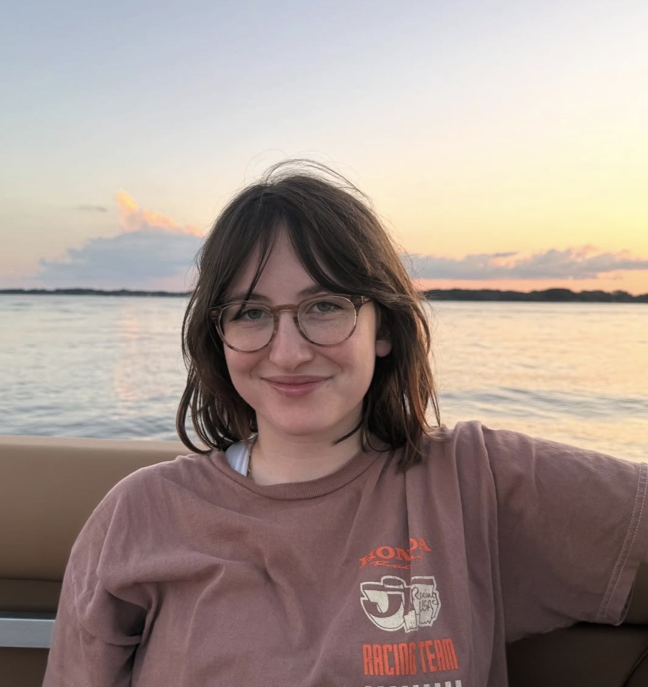
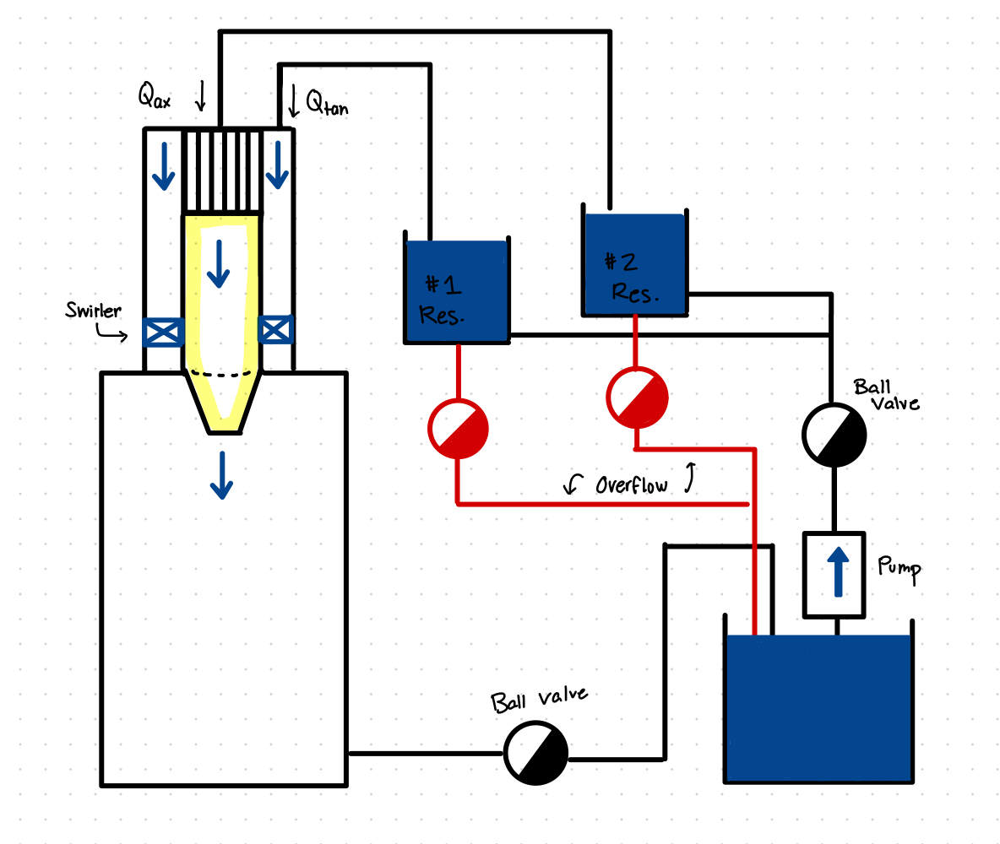

Rachel White
I'm a Mechanical Engineering student at Duke University (Expected May 2027). This past summer I was a LADSS Research Fellow at Los Alamos National Laboratory.
I'm interested in sustainable systems and aerospace—particularly fluid dynamics, propulsion, and experimental testing. Outside of engineering, I like to read fantasy, write poetry, go to concerts, and be outside and likely birdwatching.

Current Focus

Douglas Research Lab
Variable-Swirl Jet Flow Loop
Designing and modeling a variable-swirl jet flow loop for dynamic testing and flow visualization — applying fluid mechanics to validate experimental parameters against the system literature.
Open the parameter calculatorSelected Projects
LADSS Research Fellowship: Los Alamos National Laboratory
Selected for a competitive 10-week fellowship in multi-disciplinary dynamics. Conducted team-based R&D with LANL scientists to instrument the Rapid Angular Acceleration Test Stand.
Summer 2026
Variable-Swirl Jet Flow Loop Design
Designed and modeled a variable-swirl jet flow loop for dynamic testing and flow visualization in the Douglas Research Lab. Includes a parameter calculator and an interactive CAD viewer.
Aug 2025–Present
Digital Technology: Pratt & Whitney
Automated process-plan reporting for engineering visibility, and built the Overtime Manager web app to streamline shop-floor operations and cut manual communication.
Summer 2025
Piezoelectric Airflow Experiments: Duke Aeroelasticity Lab
Designed a precision alignment fixture, operated Duke's wind tunnel, and reduced mechanical interference on a piezoelectric flag.
Summer 2024
Visit the Duke Aeroelasticity Lab website ↗
Postpartum Hemorrhage Detection Device
Collaborated, designed, and prototyped a sustainable device for quantifying blood loss during PPH in low-resource Ugandan clinics.
Fall 2023
No projects in this category yet.